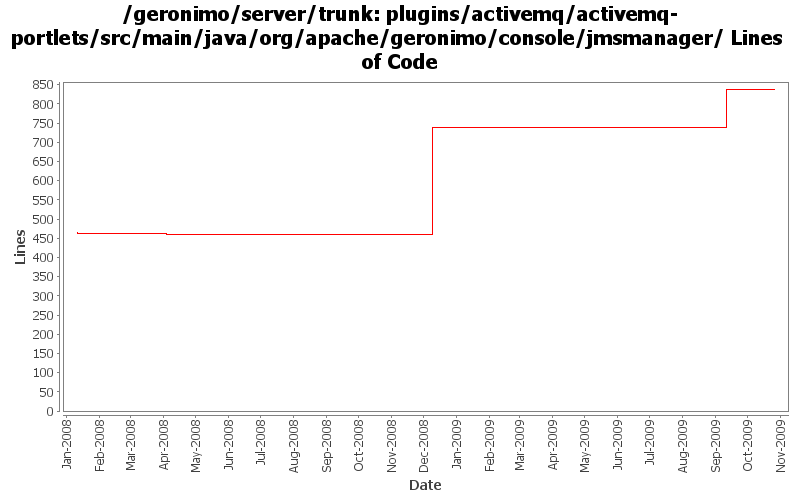

[root]/plugins/activemq/activemq-portlets/src/main/java/org/apache/geronimo/console/jmsmanager
 activemqCF
(1 files, 189 lines)
activemqCF
(1 files, 189 lines)
 handlers
(3 files, 285 lines)
handlers
(3 files, 285 lines)
 helper
(3 files, 584 lines)
helper
(3 files, 584 lines)
 renderers
(5 files, 556 lines)
renderers
(5 files, 556 lines)
 server
(3 files, 902 lines)
server
(3 files, 902 lines)
 wizard
(10 files, 2161 lines)
wizard
(10 files, 2161 lines)

| Author | Changes | Lines of Code | Lines per Change |
|---|---|---|---|
| Totals | 20 (100.0%) | 425 (100.0%) | 21.2 |
| dwoods | 11 (55.0%) | 286 (67.3%) | 26.0 |
| xuhaihong | 7 (35.0%) | 138 (32.5%) | 19.7 |
| jlaskowski | 1 (5.0%) | 1 (0.2%) | 1.0 |
| djencks | 1 (5.0%) | 0 (0.0%) | 0.0 |
Cleanup some codes in the ActiveMQ plug-in
0 lines of code changed in 2 files:
GERONIMO-4625 JMS statistics does not work correctly while the server url is of vm protocol
138 lines of code changed in 3 files:
GERONIMO-4633 extra semicolon in code Thanks Shawn for the patch!
0 lines of code changed in 2 files:
GERONIMO-4337 rename AMQ5 modules to old names that apps expect
279 lines of code changed in 3 files:
GERONIMO-4337 rename AMQ5 modules to old names that apps expect
0 lines of code changed in 3 files:
GERONIMO-4337 remove old AMQ4 based modules
7 lines of code changed in 3 files:
header fixes (Rev, Date)
1 lines of code changed in 1 file:
GERONIMO-3983 Update JMS Resource portlet to show the Destination statistics. Thanks Anish for the patch.
0 lines of code changed in 1 file:
GERONIMO-3819 Update JMS Resources Portlet. Patch from Anish Pathadan.
0 lines of code changed in 1 file:
GERONIMO-3732. Move the rest of deployment functionality out of console base and (mostly) into plugin-portlets. Revert the accidental menu name change for looking at web apps
0 lines of code changed in 1 file: